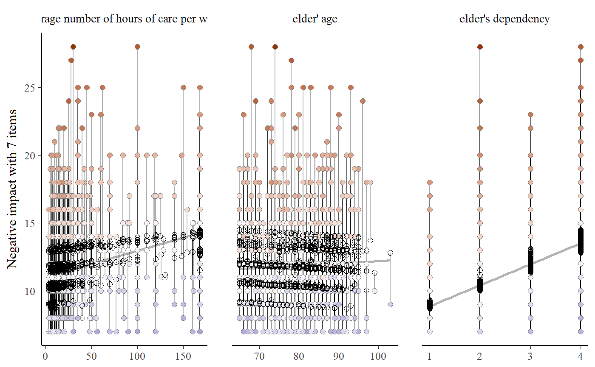
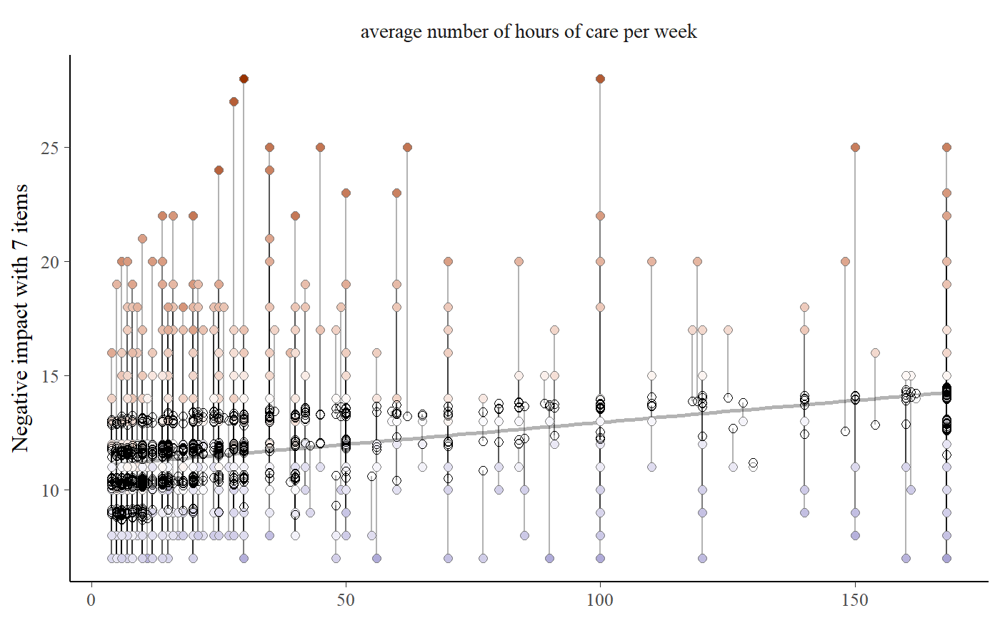
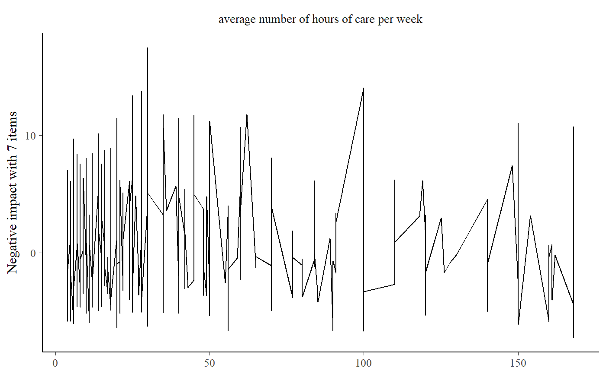

This function plots observed and predicted values of the response of linear (mixed) models for each coefficient and highlights the observed values according to their distance (residuals) to the predicted values. This allows to investigate how well actual and predicted values of the outcome fit across the predictor variables.
sjp.resid(fit, geom.size = 2, remove.estimates = NULL, show.lines = TRUE, show.resid = TRUE, show.pred = TRUE, show.ci = F, prnt.plot = TRUE)
Arguments
| fit | Fitted linear (mixed) regression model (including objects of class
|
|---|---|
| geom.size | size resp. width of the geoms (bar width, line thickness or point size, depending on plot type and function). Note that bar and bin widths mostly need smaller values than dot sizes. |
| remove.estimates | Character vector with coefficient names that indicate
which estimates should be removed from the plot.
|
| show.lines | Logical, if |
| show.resid | Logical, if |
| show.pred | Logical, if |
| show.ci | Logical, if |
| prnt.plot | logical, if |
Value
(Insisibily) returns the ggplot-object with the complete plot (plot),
the residual pattern (pattern) as well as the data frame that
was used for setting up the ggplot-object (mydf).
Note
The actual (observed) values have a coloured fill, while the predicted values have a solid outline without filling.
Examples
data(efc) # fit model fit <- lm(neg_c_7 ~ c12hour + e17age + e42dep, data = efc) # plot residuals for all independent variables sjp.resid(fit)# remove some independent variables from output sjp.resid(fit, remove.estimates = c("e17age", "e42dep"))# show pattern sjp.resid(fit, remove.estimates = c("e17age", "e42dep"))$pattern